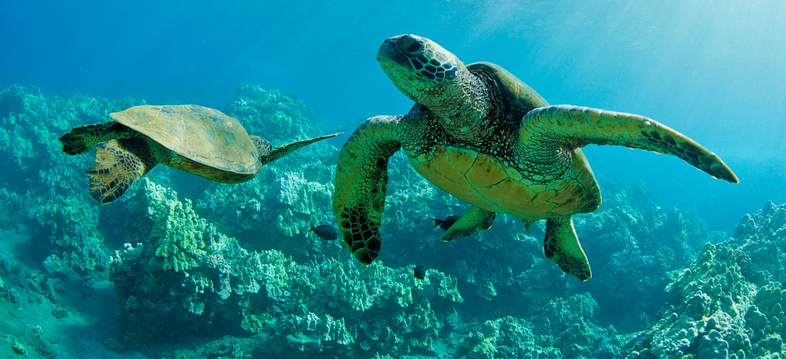

Turtle Hatchery was started by the Sri Lankans with a view to protect the turtles from extinction. Earlier,
people usually fishermen used to collect the turtle’s eggs and sold it to whoever would pay the higher price

The Bentota Turtle Hatchery Project is a popular attraction in Bentota for all travellers. The pristine golden
shores that draws you to our island, also provides an enticing nesting ground for several endangered turtle
species from the Olive Ridley to the Leatherback turtle. The project aims at conserving and protecting the eggs
from predators and other dangers. Visit the turtle hatchery in Bentota to learn about these endangered graceful
creatures of the sea.
WHAT WE DO
The Turtle Hatchery protects the eggs until they hatch and are ready to swim back home.
The project also rescues turtles that are injured while at sea, due to fishing nets, motors and more. They
are often rehabilitated before being released back.
The Bentota Turtle Hatchery is located approximately 10 minutes away from our beachfront properties.